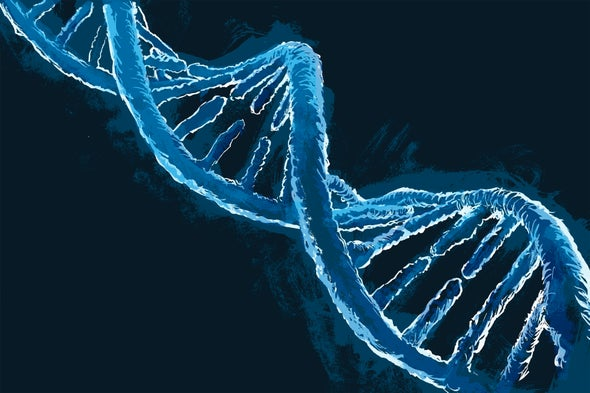
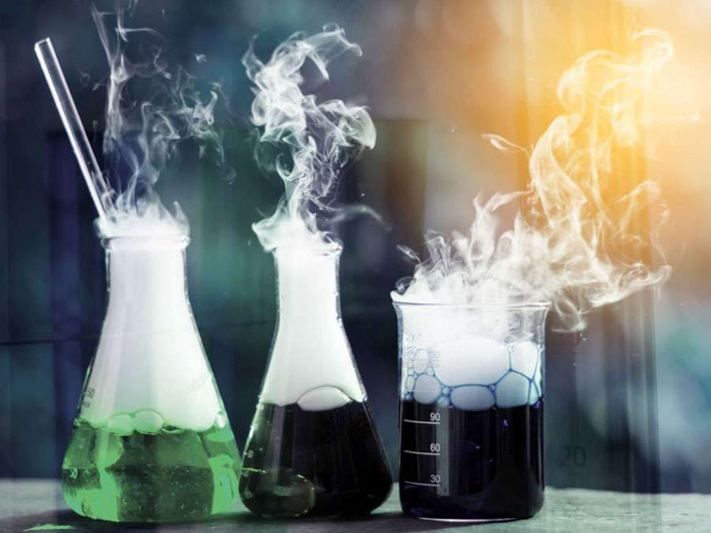
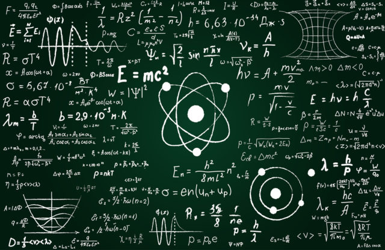
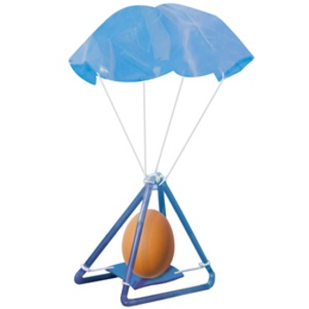
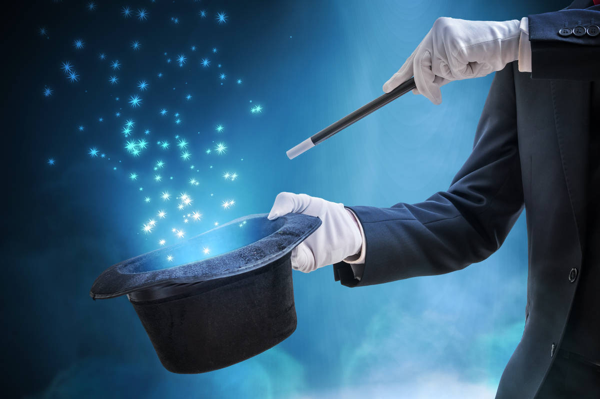

|  |
Biology/Environment
Banana DNA: Extracting DNA from a slice of banana |
|  |
Chemistry
Bath Bombs: Making fizzy, bubbly baths with baking soda and citric acid |
|  |
Mathematics/Physics
Spirograph: Use geometry to draw beautiful patterns |
|  |
Engineering
Straw Rockets: Get ready for takeoff with some easily made rockets |
|  |
Magic
Singing Glasses: Watch as we make wine glasses sing with vibrations |